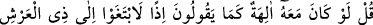
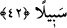
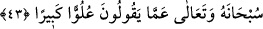

Kâşifî şöyle der: “Doğrusu biz âyetlerde kendimizin çocuktan münezzeh olduğumuzu
tekrar tekrar beyan ettik” “Fakat bu,” bu etkili tekrar ve açıklamalar “onlara,” haktan
“daha da kaçıp uzaklaşmaktan” ve yüz çevirmekten “başka bir şey sağlamıyor.”
Kâşifî şöyle der: “Haktan ürkmekten ve uzaklaşmaktan başka bir şey sağlamıyor”
42. De ki: Eğer söyledikleri gibi Allah ile birlikte başka ilâhlar da bulunsaydı, o
takdirde bu ilâhlar, Arş’ın sâhibi olan Allah’a ulaşmak için çareler arayacaklardı.
Sözlerinin asılsızlığını bir başka açıdan ortaya koymak için onlara “De ki: Eğer”
müşriklerin tamamının “söyledikleri gibi Allah ile birlikte başka ilâhlar da
bulunsaydı, o takdirde bu ilâhlar, Arş’ın sâhibi olan” mutlak olarak mülk ve
rubûbiyyet kendisinin olan “Allah’a ulaşmak için” kralların birbirlerine yaptıkları gibi
Allah’a galip gelmek ve onu alt etmek, kendi ayıp ve âcizliklerini gidermek için
“çareler arayacaklardı.”
Bu da, diğer ilâhların ya Allah’tan daha büyük ya O’na denk ya da O’ndan daha küçük
olmasından başka bir durum olamayacağına işâret etmektedir. Eğer ilâhlar Allah’tan
daha büyük olsalar arş sâhibini sıkıntıya düşürmeye ve kralların yaptığı gibi mülkün
kendi ellerine geçmesi, O’nda kalmaması için kahır ve galebe yoluyla çekip almak için
bir yol ararlar.
Âyet istisnâî bir kıyas olarak tasvir etmek sûretiyle imkânsızlık/temânu‘ deliline
işârettir. Çünkü âyette arkadan gelenin zıddı istisnâ edilmiştir. Eğer ilâhlar Allah’ın bir
benzeri olsalardı kendileri mülkten uzak bir halde iken mülkün kendileri gibi birinin
elinde olmasına râzı olmazlardı. Yine mülk konusunda onunla çekişirlerdi. Eğer onlar
Allah’tan daha aşağıda iseler o takdirde de noksan olan, ilâhlığa lâyık olmaz. O
takdirde ulûhiyette mükemmel olan arşın sâhibine hizmet, kulluk ve yaklaşmak için yol
ararlardı.
Âyet iktirânî kıyâsa işârettir. Şöyle ki eğer Allah’la birlikte başka ilâhların da olduğu
farz edilse Allah’a itâat ederek O’na yaklaşırlardı. Allah Teâlâ’ya itâat ederek O’na
yaklaşanlar ise ilâh olamazlar. Dolayısıyla ilâh olduğu farz edilenler ilâh olamazlar.
Burada ilâhlar ifâdesiyle kasdedilenler, ilim sâhibi kimselerden Îsâ (a.s.), Uzeyr (a.s.)
ve meleklerdir. et-Te’vîlâtü’n-Necmiyye’de böyle geçmektedir. Müftî Sa‘dî
Hâşiye’sinden de ona bazı şeyler karıştırılmıştır.